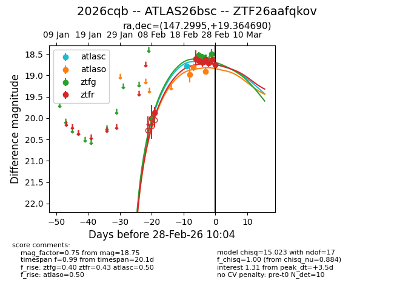
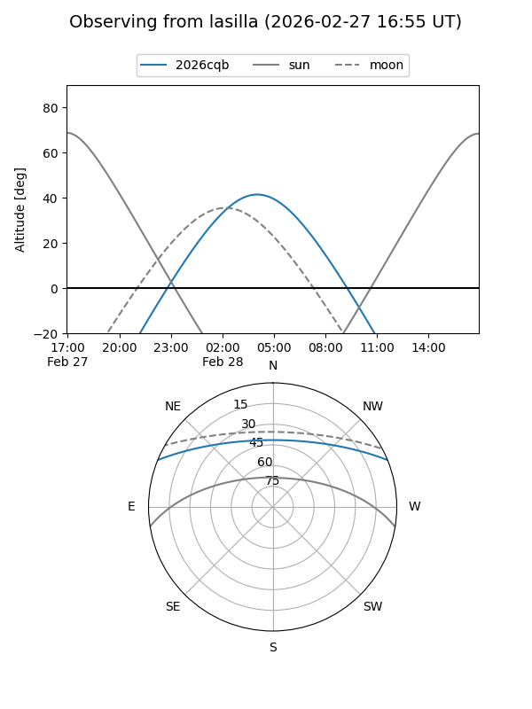
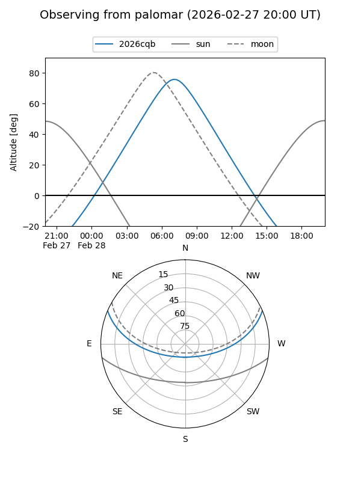
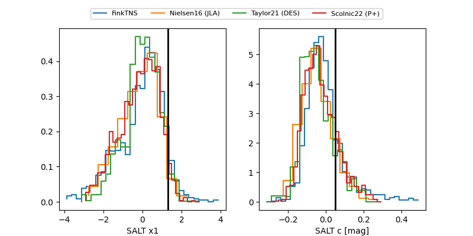

2026cqb
Target 2026cqb at 2026-02-28 10:06
Aliases and brokers:
FINK: link
Lasair: link
ALeRCE: link
TNS: link
YSE: link
alt names
ZTF26aafqkov (ztf,fink_ztf)
2026cqb (tns,yse)
ATLAS26bsc (atlas)
Coordinates:
equatorial (ra, dec) = 147.2995,+19.36469
equatorial (HMS+DMS) = 09:49:11.88,+19:21:52.88
galactic (l, b) = (213.4507,+47.65299)
Flags:
Photometry:
last atlasc=18.78, atlaso=18.91, ztfg=18.50, ztfr=18.75
1 atlasc, 3 atlaso, 6 ztfg, 8 ztfr detections
Lightcurve

Visibility


Additional plots
